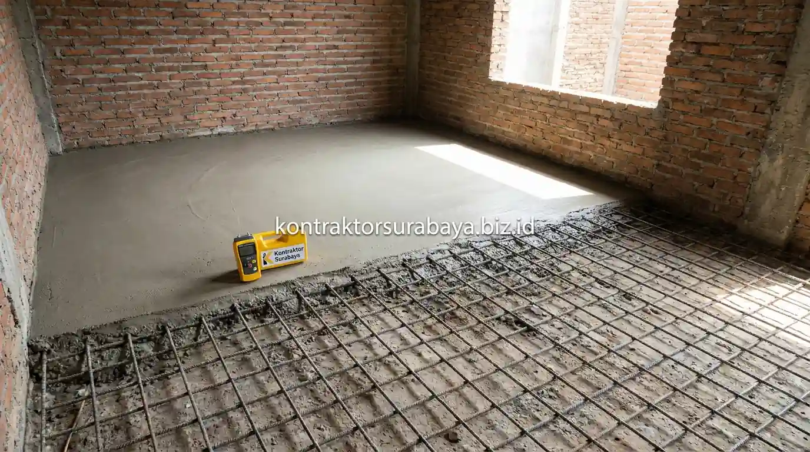

Masalah banjir musiman dan genangan air hujan sering kali menjadi momok yang mengkhawatirkan bagi para pemilik hunian di kawasan Surabaya Timur, seperti Rungkut, Gunung Anyar, Sukolilo, dan Mulyorejo. Selain faktor intensitas curah hujan yang tinggi, salah satu pemicu utama masuknya air ke dalam rumah adalah posisi lantai ruang tamu atau carport yang kini telah sejajar, bahkan berada di bawah permukaan aspal jalan kompleks perumahan.
Ketika jalan lingkungan diaspal atau ditinggikan berulang kali oleh pihak dinas terkait maupun swadaya warga, rumah tinggal yang tidak ikut dinaikkan akan otomatis menjadi "cekungan" penampung limpasan air. Untuk mengatasi ancaman ini secara permanen, renovasi meninggikan lantai rumah anti banjir merupakan solusi teknis paling tepat guna mengembalikan rasa aman dan kenyamanan keluarga Anda.
1. Kenapa Banyak Rumah di Surabaya Timur Rawan Kebanjiran
Kontur lahan yang relatif datar dan rendah dibanding kawasan perbukitan Surabaya Barat, dipadukan sistem drainase kota yang kerap mengalami sedimentasi lumpur atau beban debit pasang air laut (rob), membuat sejumlah pemukiman di Surabaya Timur sangat rentan mengalami genangan saat musim hujan deras tiba.
Rumah-rumah yang dibangun pada era 10–20 tahun lalu saat tinggi jalan perumahan masih rendah, kini mendapati ketinggian lantainya tersusul setelah 2 hingga 3 kali proyek pelapisan aspal baru (overlay). Akibatnya, air limpasan jalan raya dapat langsung meluap masuk melewati teras menuju ruang dalam rumah hanya dalam hitungan menit setelah hujan lebat mengguyur.
2. Metode Meninggikan Lantai dengan Urugan Tanah atau Pasir
Metode urugan tanah atau pasir dilakukan dengan menambah lapisan material urug (pasir pasang, sirtu, atau tanah padas) di atas lantai keramik lama sebelum lapisan screed dan keramik baru dipasang, sangat cocok untuk kebutuhan peninggian dengan selisih ketinggian yang relatif kecil (antara 10 cm hingga 30 cm).
Metode ini umumnya lebih ekonomis dan cepat dikerjakan dibanding membongkar seluruh struktur lantai lama. Kendati demikian, tahapan pemadatan material urug wajib dilakukan secara bertahap (layer per layer) menggunakan mesin stamper atau penyiraman air padat agar tidak terjadi rongga udara. Pemadatan yang kurang sempurna berisiko menimbulkan penurunan lantai (subsidence) dan pecahnya nat keramik di masa depan.
3. Metode Meninggikan Lantai dengan Cor Ulang Dak Beton
Metode cor ulang dak beton melibatkan pembongkaran sebagian struktur lantai lama dan penambahan struktur beton bertulang baru dengan ketinggian yang disesuaikan, lebih sesuai untuk peninggian dengan selisih ketinggian yang cukup signifikan (di atas 30 cm hingga 60 cm) atau pada lantai 2 rumah bertingkat.
Metode ini menggunakan anyaman besi wiremesh M6–M8 dan adukan mutu beton K-225/K-250, didukung pemasangan lapisan plastik cor (vapor barrier) sebagai pemutus kelembapan tanah. Meskipun memerlukan proses yang lebih kompleks dan biaya awal lebih tinggi, hasil lantai beton jauh lebih kokoh, kedap air tanah (waterproof), dan tidak akan pernah ambles menahan beban perabot rumah tangga yang berat.
| Aspek Komparasi | Metode Urugan Pasir / Tanah | Metode Cor Beton Bertulang | Rekomendasi Pemilihan |
|---|---|---|---|
| Ketinggian Peninggian | Ideal untuk selisih 10 cm – 30 cm | Ideal untuk selisih 30 cm – 60+ cm | Urugan untuk kenaikan minor, Cor Beton untuk kenaikan masif. |
| Durasi Pengerjaan | Cepat (1–2 minggu untuk luas standar) | Sedang (2–3 minggu termasuk curing beton) | Urugan lebih cepat bila ruangan harus segera dihuni. |
| Estimasi Biaya | Lebih ekonomis (material urug hemat) | Menengah (material semen, pasir, wiremesh) | Urugan menghemat budget awal renovasi. |
| Kestabilan Struktur | Rentan ambles jika pemadatan kurang | Sangat stabil, padat merata, anti retak | Cor beton menjamin lantai awet puluhan tahun tanpa ambles. |
| Ketahanan Air / Rembes | Perlu tambahan plastik cor agar tidak lembap | Sangat kedap dengan aditif waterproofing | Cor beton unggul menghentikan kapilaritas air tanah. |

4. Perbandingan Kedua Metode dari Sisi Biaya dan Waktu Pengerjaan
Metode urugan umumnya lebih cepat dan lebih hemat biaya untuk peninggian kecil, sementara metode cor ulang memerlukan waktu dan biaya lebih besar namun memberi hasil yang lebih stabil untuk peninggian dengan selisih signifikan.
Pemilihan metode yang tepat sebaiknya mempertimbangkan selisih ketinggian yang dibutuhkan, kondisi struktur pondasi rumah eksisting, serta anggaran yang tersedia. Memaksakan metode urugan tanah biasa pada selisih ketinggian lebih dari 40 cm tanpa dinding penahan (retaining wall) di sekelilingnya dapat menimbulkan risiko pergeseran tanah yang merusak dinding bata eksisting.
5. Persiapan Sebelum Meninggikan Lantai Rumah
Evaluasi ketinggian pintu dan jendela, pengecekan instalasi listrik dan pipa eksisting, perhitungan selisih ketinggian dengan permukaan jalan, dan penyiapan alur pembuangan air kerja adalah empat persiapan penting sebelum proses renovasi dimulai:
- Evaluasi Ketinggian Pintu dan Jendela: Membantu menentukan apakah kusen pintu perlu dipotong atau dinaikkan ke atas agar sisa tinggi bukaan pintu tetap nyaman dilewati (minimal 205–210 cm).
- Pengecekan Instalasi Listrik dan Pipa Tertanam: Mengetahui posisi pipa air kotor, saluran buang toilet, dan pipa kabel listrik yang berada di bawah lantai lama agar dapat disambung dan diposisikan ulang ke atas.
- Pengukuran Titik Nol Jalan (Peil Banjir): Mengukur selisih ketinggian menggunakan selang waterpass atau theodolite terhadap aspal jalan raya untuk memastikan lantai baru berada minimal 40 cm di atas aspal.
- Penyiapan Alur Pembuangan Air Kerja: Memastikan proses pembongkaran dan pencucian lantai tidak menimbulkan genangan air kotor ke rumah tetangga sekitar.
6. Dampak Meninggikan Lantai terhadap Elemen Bangunan Lain
Penyesuaian tinggi pintu, relokasi titik stop kontak, penambahan anak tangga pada akses masuk, dan penyesuaian kemiringan saluran air adalah empat dampak yang perlu diantisipasi secara cermat:
- Penyesuaian Tinggi Pintu & Plafon: Naiknya lantai akan memperpendek jarak lantai ke plafon. Jika tinggi plafon eksisting di bawah 3 meter, plafon mungkin perlu dibongkar dan dinaikkan mengikuti rangka atap.
- Relokasi Titik Stop Kontak & Sakelar: Posisi stop kontak lantai bawah yang awalnya setinggi 40 cm dari lantai lama akan menjadi terlalu rendah (10–20 cm dari lantai baru), sehingga perlu dibobok dan dipindahkan ke posisi ergonomis (40–150 cm).
- Penambahan Anak Tangga pada Teras Masuk: Transisi antara carport dan ruang tamu akan membutuhkan 1–2 trap anak tangga yang dirancang landai agar aman bagi anak-anak dan lansia.
- Kemiringan Saluran Pembuangan Air (Pipa Pralon): Kemiringan (slope) pipa air kotor menuju selokan luar kota harus disesuaikan kembali agar aliran air buangan gravitasi tetap lancar tanpa ada genangan balik.
7. Kesalahan Umum saat Meninggikan Lantai Rumah
Tidak memperhitungkan dampak pada instalasi tersembunyi, memilih metode tanpa mempertimbangkan selisih ketinggian yang dibutuhkan, mengabaikan penyesuaian saluran air, dan tidak mengevaluasi kondisi struktur eksisting adalah empat kesalahan umum yang wajib Anda hindari:
- Tidak Memperhitungkan Instalasi Tersembunyi: Menimpa lantai lama tanpa meninggikan pipa floor drain kamar mandi berisiko menutup akses sanitasi dan memicu kebocoran tersembunyi.
- Mengabaikan Lapisan Anti-Lembap: Tidak memasang plastik cor membuat uap air tanah naik ke keramik baru, menyebabkan keramik terasa dingin beruap atau muncul bercak jamur putih pada nat.
- Mengabaikan Penyesuaian Saluran Air: Tidak memperbaiki kemiringan talang atau pipa buang membuat air hujan dari teras justru berbalik masuk ke dalam rumah.
- Menambah Beban Tanpa Cek Pondasi: Menimbun urugan tanah terlalu tebal pada lantai 2 rumah bertingkat tanpa analisa struktural dapat membebani plat dak eksisting melampaui batas aman.
"Meninggikan lantai rumah bukan sekadar menambah ketinggian ubin, melainkan menyelaraskan elevasi peil banjir, sistem pipa drainase gravitasi, dan ergonomi sirkulasi hunian secara menyeluruh."
Setiap rumah memiliki kondisi kontur lantai dan tingkat kerawanan banjir yang berbeda. Dapatkan survei lokasi gratis dan rekomendasi teknis terbaik bersama tim engineer Kontraktor Surabaya. Pelajari cakupan layanan kami pada halaman jasa renovasi rumah Surabaya, hitung estimasi anggaran biaya pada halaman RAB & estimasi biaya renovasi, atau lihat ragam portofolio kami pada galeri proyek kami.